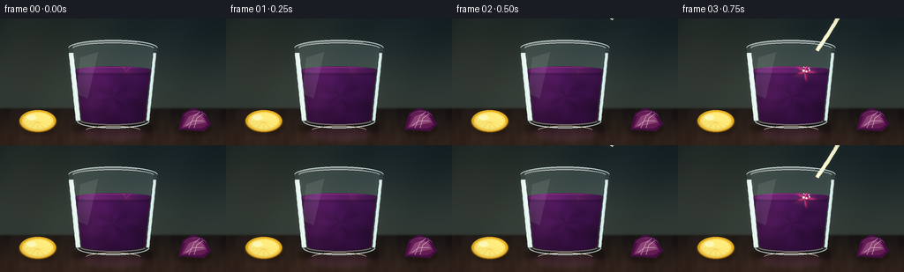
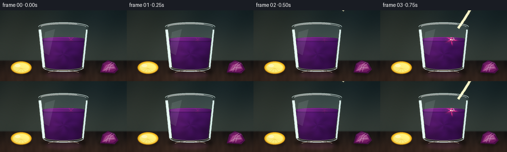
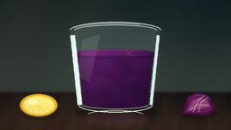
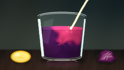
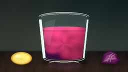
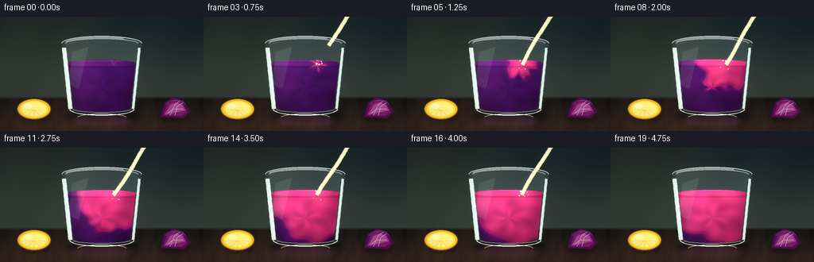
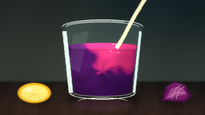

CODING AGENTS AS PIXEL WORLD MODELS
traex/DeepSeek-V4.1-Flash · phygen_149
点击播放 · 原生 RGB 像素
逐轮保存的候选
回放视频、检查图与代码变化。
每份候选均可单独播放。实际图片检查记录在下方工具轨迹中。
候选 01播放与检查图
点击播放 · 原生 RGB 像素

展开代码变化
--- 上一保存版本
+++ 本次保存版本
@@ -0,0 +1,417 @@
+from pathlib import Path
+
+import numpy as np
+from PIL import Image, ImageDraw, ImageFilter
+
+from artifact_io import save
+
+
+W, H = 256, 144
+SS = 3
+WW, HH = W * SS, H * SS
+FPS = 4.0
+NFRAMES = 20
+
+CX = 128.0
+RIM_Y = 31.0
+GLASS_BOTTOM = 124.0
+
+yy, xx = np.mgrid[0:HH, 0:WW]
+X = xx.astype(np.float32) / SS
+Y = yy.astype(np.float32) / SS
+
+
+def smoothstep(edge0, edge1, value):
+ t = np.clip((value - edge0) / (edge1 - edge0), 0.0, 1.0)
+ return t * t * (3.0 - 2.0 * t)
+
+
+def pil_mask(draw_fn):
+ image = Image.new("L", (WW, HH), 0)
+ draw_fn(ImageDraw.Draw(image))
+ return np.asarray(image, dtype=np.float32) / 255.0
+
+
+def box(values):
+ return tuple(float(v) * SS for v in values)
+
+
+def ellipse(draw, values, fill=255):
+ draw.ellipse(box(values), fill=fill)
+
+
+def polygon(draw, points, fill=255):
+ draw.polygon([(float(x) * SS, float(y) * SS) for x, y in points], fill=fill)
+
+
+def line(draw, points, fill=255, width=1):
+ draw.line(
+ [(float(x) * SS, float(y) * SS) for x, y in points],
+ fill=fill,
+ width=max(1, int(round(width * SS))),
+ joint="curve",
+ )
+
+
+def gaussian_mask(mask, radius):
+ image = Image.fromarray(np.clip(mask * 255.0, 0, 255).astype(np.uint8))
+ image = image.filter(ImageFilter.GaussianBlur(radius * SS))
+ return np.asarray(image, dtype=np.float32) / 255.0
+
+
+def blend(rgb, color, alpha):
+ color = np.asarray(color, dtype=np.float32)
+ a = np.clip(alpha, 0.0, 1.0)[..., None]
+ return rgb * (1.0 - a) + color * a
+
+
+def make_background():
+ wall_t = smoothstep(0.0, 102.0, Y)
+ wall_top = np.array([24.0, 38.0, 41.0], dtype=np.float32)
+ wall_bottom = np.array([52.0, 61.0, 56.0], dtype=np.float32)
+ wall = wall_top + (wall_bottom - wall_top) * wall_t[..., None]
+
+ warm = np.exp(-(((X - 38.0) / 93.0) ** 2 + ((Y - 18.0) / 60.0) ** 2))
+ wall += warm[..., None] * np.array([15.0, 9.0, 2.0], dtype=np.float32)
+ wall += (np.sin(X * 0.071 + Y * 0.027) * 1.7)[..., None]
+
+ table_t = smoothstep(0.0, 43.0, Y - 101.0)
+ table_near = np.array([52.0, 37.0, 30.0], dtype=np.float32)
+ table_far = np.array([25.0, 22.0, 21.0], dtype=np.float32)
+ table = table_far + (table_near - table_far) * table_t[..., None]
+ grain = (
+ 3.0 * np.sin(X * 0.12 + 2.7 * np.sin(Y * 0.035))
+ + 1.7 * np.sin(X * 0.33 + Y * 0.14)
+ + 1.1 * np.cos(X * 0.67 - Y * 0.08)
+ )
+ table += grain[..., None] * np.array([1.0, 0.76, 0.58], dtype=np.float32)
+ table += np.exp(-(((X - 32.0) / 105.0) ** 2 + ((Y - 118.0) / 29.0) ** 2))[..., None] * np.array(
+ [10.0, 6.0, 3.0], dtype=np.float32
+ )
+
+ horizon = smoothstep(99.5, 104.0, Y)[..., None]
+ rgb = wall * (1.0 - horizon) + table * horizon
+
+ shadow = pil_mask(
+ lambda d: (
+ ellipse(d, [81.0, 117.0, 175.0, 132.0]),
+ ellipse(d, [93.0, 121.0, 163.0, 130.0], fill=180),
+ )
+ )
+ shadow = gaussian_mask(shadow, 3.4)
+ rgb *= 1.0 - 0.44 * shadow[..., None]
+
+ # A soft reflected glow grounds the glass on the countertop.
+ reflected = pil_mask(lambda d: ellipse(d, [92.0, 123.0, 164.0, 138.0]))
+ reflected = gaussian_mask(reflected, 3.0)
+ rgb += reflected[..., None] * np.array([25.0, 11.0, 23.0], dtype=np.float32)
+
+ return np.clip(rgb, 0.0, 255.0)
+
+
+def make_glass_masks():
+ outer = pil_mask(
+ lambda d: (
+ ellipse(d, [77.0, 24.0, 179.0, 43.0]),
+ polygon(d, [(78.0, 33.0), (178.0, 33.0), (169.0, 117.0), (87.0, 117.0)]),
+ ellipse(d, [87.0, 109.0, 169.0, 125.0]),
+ )
+ )
+ cavity = pil_mask(
+ lambda d: (
+ ellipse(d, [82.0, 27.5, 174.0, 40.5]),
+ polygon(d, [(83.0, 34.0), (173.0, 34.0), (164.0, 114.0), (92.0, 114.0)]),
+ ellipse(d, [92.0, 107.5, 164.0, 120.0]),
+ )
+ )
+ rim = pil_mask(lambda d: (ellipse(d, [77.0, 24.0, 179.0, 43.0]),))
+ rim_inner = pil_mask(lambda d: (ellipse(d, [82.0, 27.5, 174.0, 40.5]),))
+ rim = np.clip(rim - rim_inner, 0.0, 1.0)
+ rim *= smoothstep(43.5, 40.0, Y)
+ return outer, cavity, rim
+
+
+def make_liquid_masks(surface_y):
+ shape = pil_mask(
+ lambda d: (
+ ellipse(d, [84.0, surface_y - 4.4, 172.0, surface_y + 4.4]),
+ polygon(d, [(84.0, surface_y), (172.0, surface_y), (164.0, 117.0), (92.0, 117.0)]),
+ ellipse(d, [92.0, 112.0, 164.0, 120.0]),
+ )
+ )
+ liquid = np.clip(shape * CAVITY, 0.0, 1.0)
+ surface = pil_mask(lambda d: ellipse(d, [84.0, surface_y - 4.3, 172.0, surface_y + 4.3]))
+ surface *= smoothstep(surface_y + 5.2, surface_y + 2.0, Y)
+ return liquid, surface
+
+
+def liquid_layer(frame, surface_y):
+ liquid, surface = make_liquid_masks(surface_y)
+ time = frame / FPS
+ mix_t = np.clip((frame - 2.0) / 13.0, 0.0, 1.0)
+ mix_t = mix_t ** 0.86
+
+ xc = 128.0
+ yc = (surface_y + 119.0) * 0.5
+ dx = (X - xc) / 46.0
+ dy = (Y - yc) / 35.0
+ radius = np.sqrt(dx * dx + dy * dy)
+ angle = np.arctan2(dy, dx)
+
+ swirl = np.sin(angle * 4.0 + radius * 5.2 - time * 1.35)
+ swirl += 0.55 * np.sin(angle * 7.0 - radius * 7.5 + time * 1.7)
+ depth = np.clip((Y - surface_y) / max(1.0, 119.0 - surface_y), 0.0, 1.0)
+ side_shadow = np.clip(np.abs(X - xc) / 47.0, 0.0, 1.0) ** 2
+
+ impact_x = 143.0
+ impact_y = surface_y + 1.0
+ ix = (X - impact_x) / 52.0
+ iy = (Y - impact_y) / 52.0
+ dist = np.sqrt(ix * ix + iy * iy)
+ ia = np.arctan2(iy, ix)
+ edge_wobble = (
+ 0.075 * np.sin(ia * 5.0 + time * 1.6)
+ + 0.045 * np.sin(ia * 9.0 - radius * 4.0 - time * 2.4)
+ + 0.035 * swirl
+ )
+ mix = np.clip((mix_t * 1.52 - dist * 1.20 + edge_wobble + 0.10) * 3.0, 0.0, 1.0)
+ mix = mix * mix * (3.0 - 2.0 * mix)
+
+ deep = np.array([63.0, 17.0, 78.0], dtype=np.float32)
+ magenta = np.array([142.0, 24.0, 91.0], dtype=np.float32)
+ acid = np.array([220.0, 52.0, 111.0], dtype=np.float32)
+ low_mix = np.clip(mix * 1.8, 0.0, 1.0)
+ color = deep + (magenta - deep) * low_mix[..., None]
+ color = color + (acid - color) * np.clip((mix - 0.44) / 0.56, 0.0, 1.0)[..., None]
+
+ color *= (
+ 0.73
+ + 0.30 * (1.0 - depth)
+ + 0.055 * swirl
+ - 0.24 * side_shadow
+ )[..., None]
+ left_light = np.exp(-(((X - 103.0) / 22.0) ** 2 + ((Y - 76.0) / 42.0) ** 2))
+ color += left_light[..., None] * np.array([25.0, 9.0, 21.0], dtype=np.float32)
+
+ # The acid front has a luminous, translucent leading edge.
+ front = np.exp(-((mix - 0.48) / 0.10) ** 2) * (1.0 - 0.45 * mix_t)
+ color += front[..., None] * np.array([29.0, 8.0, 22.0], dtype=np.float32)
+ impact_glow = np.exp(-(((X - impact_x) / 12.0) ** 2 + ((Y - impact_y) / 8.0) ** 2))
+ color += impact_glow[..., None] * (8.0 + 13.0 * (frame >= 3)) * np.array([1.0, 0.8, 0.75])
+
+ # Elliptical ripples are compressed vertically by the perspective of the surface.
+ ripple = np.zeros_like(X)
+ if frame >= 3:
+ since = (frame - 3.0) / FPS
+ for k in range(3):
+ age = (since + k * 0.29) % 1.15
+ r = 2.0 + age * 32.0
+ d = np.sqrt(((X - impact_x) / 1.0) ** 2 + ((Y - surface_y) / 0.29) ** 2)
+ ripple += np.exp(-((d - r) / 0.70) ** 2) * np.exp(-age * 1.7)
+ surface_light = (
+ 0.12
+ + 0.23 * np.exp(-(((X - 107.0) / 36.0) ** 2 + ((Y - surface_y) / 3.4) ** 2))
+ + 0.18 * ripple
+ )
+ color += surface[..., None] * surface_light[..., None] * np.array([90.0, 31.0, 65.0], dtype=np.float32)
+
+ # Slight darkening at the meniscus and a bright upper lip.
+ meniscus = np.exp(-((Y - surface_y - 4.0) / 1.2) ** 2) * liquid
+ color *= 1.0 - 0.16 * meniscus[..., None]
+ surface_rim = np.exp(-((Y - surface_y + 3.7) / 0.85) ** 2) * surface
+ color += surface_rim[..., None] * np.array([46.0, 17.0, 32.0], dtype=np.float32)
+
+ return np.clip(color, 0.0, 255.0), liquid, surface, mix
+
+
+def draw_stream(image, frame, surface_y):
+ if frame < 2 or frame > 17:
+ return image
+ draw = ImageDraw.Draw(image, "RGBA")
+ fade_in = smoothstep(1.6, 3.2, frame)
+ fade_out = 1.0 - smoothstep(16.2, 17.6, frame)
+ alpha = fade_in * fade_out
+ if alpha <= 0.01:
+ return image
+
+ phase = frame / FPS
+ reveal = smoothstep(1.6, 4.0, frame)
+ points = []
+ for t in np.linspace(0.0, reveal, max(8, int(42 * reveal))):
+ px = 183.0 - 39.0 * t + 2.1 * np.sin(t * 4.4 + phase * 2.1) * t
+ py = -4.0 + (surface_y + 6.0) * t
+ points.append((px * SS, py * SS))
+ if len(points) >= 2:
+ draw.line(points, fill=(240, 239, 192, int(72 * alpha)), width=int(4.5 * SS), joint="curve")
+ draw.line(points, fill=(252, 250, 214, int(132 * alpha)), width=int(2.35 * SS), joint="curve")
+ highlight = [(x - 0.55 * SS, y) for x, y in points]
+ draw.line(highlight, fill=(255, 255, 244, int(205 * alpha)), width=max(1, int(0.75 * SS)), joint="curve")
+
+ for k in range(2):
+ bt = (phase * 0.58 + k * 0.47) % 0.96
+ if bt <= reveal:
+ px = 183.0 - 39.0 * bt + 2.1 * np.sin(bt * 4.4 + phase * 2.1) * bt
+ py = -4.0 + (surface_y + 6.0) * bt
+ r = (0.95 + 0.25 * k) * SS
+ draw.ellipse(
+ (px * SS - r, py * SS - r * 1.2, px * SS + r, py * SS + r * 1.2),
+ fill=(255, 255, 225, int(145 * alpha)),
+ )
+ return image
+
+
+def draw_splash(image, frame, surface_y):
+ if frame < 3 or frame > 17:
+ return image
+ draw = ImageDraw.Draw(image, "RGBA")
+ strength = smoothstep(2.5, 4.0, frame) * (1.0 - smoothstep(15.2, 17.2, frame))
+ phase = (frame - 3.0) / FPS
+ for k in range(5):
+ a = -1.95 + k * 0.92 + 0.18 * np.sin(phase * 4.0 + k)
+ age = (phase * 1.35 + k * 0.19) % 1.0
+ spread = 2.0 + age * 10.0
+ px = 143.0 + np.cos(a) * spread
+ py = surface_y - 0.7 - np.sin(a) * (spread * 0.55) + age * age * 4.0
+ r = max(0.45, 1.25 * (1.0 - age))
+ alpha = int(115 * strength * (1.0 - 0.55 * age))
+ draw.ellipse((px * SS - r * SS, py * SS - r * SS, px * SS + r * SS, py * SS + r * SS), fill=(255, 247, 220, alpha))
+ return image
+
+
+def draw_glass_front(image):
+ draw = ImageDraw.Draw(image, "RGBA")
+
+ # Main vertical reflections follow the taper of the tumbler.
+ left_points = []
+ right_points = []
+ for y in np.linspace(39.0, 116.0, 34):
+ t = (y - 33.0) / 84.0
+ left_points.append(((79.8 + 8.7 * t) * SS, y * SS))
+ right_points.append(((175.8 - 8.7 * t) * SS, y * SS))
+ draw.line(left_points, fill=(221, 242, 239, 47), width=int(5.5 * SS), joint="curve")
+ draw.line([(x + 0.65 * SS, y) for x, y in left_points], fill=(244, 252, 247, 92), width=max(1, int(0.9 * SS)), joint="curve")
+ draw.line(right_points, fill=(211, 235, 233, 35), width=int(3.5 * SS), joint="curve")
+ draw.line([(x - 0.45 * SS, y) for x, y in right_points], fill=(238, 249, 245, 65), width=max(1, int(0.65 * SS)), joint="curve")
+
+ # Broad diagonal window reflection, kept very subtle.
+ reflection = Image.new("RGBA", (WW, HH), (0, 0, 0, 0))
+ rd = ImageDraw.Draw(reflection)
+ rd.polygon(
+ [
+ (91.0 * SS, 44.0 * SS),
+ (111.0 * SS, 38.0 * SS),
+ (99.0 * SS, 91.0 * SS),
+ (86.0 * SS, 85.0 * SS),
+ ],
+ fill=(230, 248, 243, 24),
+ )
+ image.alpha_composite(reflection)
+
+ # Thick rim, with a crisp highlight along its near edge.
+ draw.arc(box([77.5, 24.5, 178.5, 42.5]), 184, 356, fill=(221, 242, 239, 98), width=int(1.15 * SS))
+ draw.arc(box([82.0, 27.5, 174.0, 40.5]), 184, 356, fill=(250, 255, 252, 142), width=max(1, int(0.7 * SS)))
+ draw.arc(box([80.0, 26.0, 176.0, 41.5]), 198, 305, fill=(255, 255, 252, 205), width=max(1, int(0.65 * SS)))
+
+ # Heavy glass base and a small elliptical caustic.
+ draw.arc(box([87.0, 108.5, 169.0, 124.5]), 4, 176, fill=(229, 245, 241, 80), width=int(1.2 * SS))
+ draw.arc(box([91.5, 112.0, 164.5, 120.5]), 4, 176, fill=(251, 255, 252, 125), width=max(1, int(0.65 * SS)))
+ draw.arc(box([92.0, 114.0, 164.0, 123.0]), 12, 168, fill=(17, 15, 18, 72), width=int(1.5 * SS))
+ draw.arc(box([97.0, 122.0, 159.0, 132.0]), 188, 352, fill=(255, 239, 202, 44), width=int(0.8 * SS))
+ return image
+
+
+def draw_lemon(image):
+ shadow = Image.new("RGBA", (WW, HH), (0, 0, 0, 0))
+ sd = ImageDraw.Draw(shadow)
+ sd.ellipse(box([24.0, 118.0, 64.0, 132.0]), fill=(12, 9, 7, 78))
+ shadow = shadow.filter(ImageFilter.GaussianBlur(1.9 * SS))
+ image.alpha_composite(shadow)
+
+ draw = ImageDraw.Draw(image, "RGBA")
+ draw.ellipse(box([21.5, 104.0, 64.0, 129.5]), fill=(111, 74, 14, 255))
+ draw.ellipse(box([22.5, 104.0, 63.0, 128.5]), fill=(236, 175, 27, 255))
+ draw.ellipse(box([25.0, 106.0, 60.5, 126.5]), fill=(250, 222, 93, 255))
+ draw.ellipse(box([27.0, 107.5, 58.5, 125.0]), fill=(255, 237, 124, 255))
+ center = (42.5, 117.0)
+ for angle in np.linspace(0.12, np.pi - 0.12, 7):
+ ex = center[0] + np.cos(angle) * 15.5
+ ey = center[1] + np.sin(angle) * 8.2
+ line(draw, [center, (ex, ey)], fill=(244, 209, 79, 165), width=0.55)
+ draw.arc(box([24.5, 106.5, 61.0, 127.0]), 8, 174, fill=(255, 248, 177, 115), width=max(1, int(0.55 * SS)))
+ draw.ellipse(box([30.0, 109.5, 41.0, 115.5]), fill=(255, 249, 184, 86))
+ return image
+
+
+def draw_cabbage(image):
+ shadow = Image.new("RGBA", (WW, HH), (0, 0, 0, 0))
+ sd = ImageDraw.Draw(shadow)
+ sd.ellipse(box([198.0, 118.0, 241.0, 132.0]), fill=(12, 8, 10, 82))
+ shadow = shadow.filter(ImageFilter.GaussianBlur(2.0 * SS))
+ image.alpha_composite(shadow)
+
+ draw = ImageDraw.Draw(image, "RGBA")
+ polygon(draw, [(202.0, 126.0), (207.0, 108.0), (218.0, 101.5), (231.0, 106.0), (239.0, 120.0), (231.0, 128.0)], fill=(74, 17, 69, 255))
+ polygon(draw, [(205.0, 124.0), (211.0, 109.0), (220.0, 105.0), (230.0, 109.0), (235.0, 120.0), (228.0, 125.0)], fill=(111, 31, 94, 255))
+ polygon(draw, [(207.0, 123.5), (214.0, 111.0), (222.0, 108.0), (229.0, 111.0), (233.0, 118.0)], fill=(151, 71, 126, 255))
+ line(draw, [(214.0, 124.0), (220.0, 110.5), (226.0, 106.0)], fill=(218, 177, 201, 112), width=0.55)
+ line(draw, [(211.0, 121.5), (218.0, 116.0), (230.0, 116.0)], fill=(219, 181, 204, 78), width=0.5)
+ line(draw, [(220.0, 124.0), (223.0, 113.0), (230.0, 108.0)], fill=(221, 181, 205, 88), width=0.5)
+ draw.arc(box([207.0, 105.0, 235.0, 125.0]), 205, 332, fill=(193, 134, 176, 58), width=max(1, int(0.55 * SS)))
+ return image
+
+
+def finish_frame(rgb, frame):
+ # Soft highlight bloom makes the wet glass and stream read at video scale.
+ luminance = rgb.max(axis=2)
+ bright = np.clip((luminance - 178.0) / 77.0, 0.0, 1.0)
+ bloom_source = Image.fromarray((bright * 255.0).astype(np.uint8))
+ bloom = bloom_source.filter(ImageFilter.GaussianBlur(2.6 * SS))
+ bloom_arr = np.asarray(bloom, dtype=np.float32)[..., None] / 255.0
+ rgb += bloom_arr * np.array([18.0, 16.0, 11.0], dtype=np.float32)
+
+ vignette = np.clip(1.0 - 0.18 * (((X - W / 2) / (W * 0.70)) ** 2 + ((Y - H / 2) / (H * 0.76)) ** 2), 0.78, 1.0)
+ rgb *= vignette[..., None]
+
+ rng = np.random.default_rng(1000 + frame)
+ grain = rng.normal(0.0, 1.15, (HH, WW, 1)).astype(np.float32)
+ rgb += grain
+
+ image = Image.fromarray(np.clip(rgb, 0.0, 255.0).astype(np.uint8), "RGB")
+ return np.asarray(image.resize((W, H), Image.Resampling.LANCZOS), dtype=np.uint8)
+
+
+def render_frame(frame):
+ background = BACKGROUND.copy()
+ surface_y = 59.0 - 1.5 * smoothstep(1.0, 17.0, frame)
+
+ tint = np.clip(OUTER * 0.13 + CAVITY * 0.035, 0.0, 0.22)
+ background = blend(background, [175.0, 211.0, 208.0], tint)
+ background = blend(background, [9.0, 15.0, 16.0], np.clip(OUTER - CAVITY, 0.0, 1.0) * 0.08)
+
+ liquid_rgb, liquid_mask, _, _ = liquid_layer(frame, surface_y)
+ liquid_alpha = liquid_mask * 0.97
+ background = background * (1.0 - liquid_alpha[..., None]) + liquid_rgb * liquid_alpha[..., None]
+
+ image = Image.fromarray(np.clip(background, 0.0, 255.0).astype(np.uint8), "RGB").convert("RGBA")
+ image = draw_stream(image, frame, surface_y)
+ image = draw_splash(image, frame, surface_y)
+ image = draw_glass_front(image)
+ image = draw_lemon(image)
+ image = draw_cabbage(image)
+
+ rgb = np.asarray(image.convert("RGB"), dtype=np.float32)
+ return finish_frame(rgb, frame)
+
+
+BACKGROUND = make_background()
+OUTER, CAVITY, RIM = make_glass_masks()
+
+
+def main():
+ case_dir = Path(__file__).resolve().parent
+ frames = np.stack([render_frame(i) for i in range(NFRAMES)], axis=0)
+ save(frames, case_dir)
+
+
+if __name__ == "__main__":
+ main()
候选 02播放与检查图
点击播放 · 原生 RGB 像素


展开代码变化
--- 上一保存版本
+++ 本次保存版本
@@ -177,9 +177,9 @@
mix = np.clip((mix_t * 1.52 - dist * 1.20 + edge_wobble + 0.10) * 3.0, 0.0, 1.0)
mix = mix * mix * (3.0 - 2.0 * mix)
- deep = np.array([63.0, 17.0, 78.0], dtype=np.float32)
- magenta = np.array([142.0, 24.0, 91.0], dtype=np.float32)
- acid = np.array([220.0, 52.0, 111.0], dtype=np.float32)
+ deep = np.array([70.0, 16.0, 99.0], dtype=np.float32)
+ magenta = np.array([165.0, 22.0, 113.0], dtype=np.float32)
+ acid = np.array([239.0, 47.0, 126.0], dtype=np.float32)
low_mix = np.clip(mix * 1.8, 0.0, 1.0)
color = deep + (magenta - deep) * low_mix[..., None]
color = color + (acid - color) * np.clip((mix - 0.44) / 0.56, 0.0, 1.0)[..., None]
@@ -195,7 +195,7 @@
# The acid front has a luminous, translucent leading edge.
front = np.exp(-((mix - 0.48) / 0.10) ** 2) * (1.0 - 0.45 * mix_t)
- color += front[..., None] * np.array([29.0, 8.0, 22.0], dtype=np.float32)
+ color += front[..., None] * np.array([38.0, 7.0, 26.0], dtype=np.float32)
impact_glow = np.exp(-(((X - impact_x) / 12.0) ** 2 + ((Y - impact_y) / 8.0) ** 2))
color += impact_glow[..., None] * (8.0 + 13.0 * (frame >= 3)) * np.array([1.0, 0.8, 0.75])
@@ -242,10 +242,10 @@
py = -4.0 + (surface_y + 6.0) * t
points.append((px * SS, py * SS))
if len(points) >= 2:
- draw.line(points, fill=(240, 239, 192, int(72 * alpha)), width=int(4.5 * SS), joint="curve")
- draw.line(points, fill=(252, 250, 214, int(132 * alpha)), width=int(2.35 * SS), joint="curve")
+ draw.line(points, fill=(240, 239, 192, int(86 * alpha)), width=int(5.0 * SS), joint="curve")
+ draw.line(points, fill=(255, 252, 201, int(170 * alpha)), width=int(2.7 * SS), joint="curve")
highlight = [(x - 0.55 * SS, y) for x, y in points]
- draw.line(highlight, fill=(255, 255, 244, int(205 * alpha)), width=max(1, int(0.75 * SS)), joint="curve")
+ draw.line(highlight, fill=(255, 255, 244, int(225 * alpha)), width=max(1, int(0.85 * SS)), joint="curve")
for k in range(2):
bt = (phase * 0.58 + k * 0.47) % 0.96
@@ -281,6 +281,17 @@
def draw_glass_front(image):
draw = ImageDraw.Draw(image, "RGBA")
+ # A dark contour separates the clear vessel from the counter and wall.
+ left_contour = []
+ right_contour = []
+ for y in np.linspace(39.0, 117.0, 38):
+ t = (y - 33.0) / 84.0
+ left_contour.append(((78.7 + 8.7 * t) * SS, y * SS))
+ right_contour.append(((177.2 - 8.7 * t) * SS, y * SS))
+ draw.line(left_contour, fill=(22, 31, 32, 105), width=max(1, int(0.85 * SS)), joint="curve")
+ draw.line(right_contour, fill=(14, 20, 22, 116), width=max(1, int(0.9 * SS)), joint="curve")
+ draw.line([(x + 1.0 * SS, y) for x, y in left_contour], fill=(218, 241, 235, 58), width=max(1, int(0.6 * SS)), joint="curve")
+
# Main vertical reflections follow the taper of the tumbler.
left_points = []
right_points = []
@@ -308,14 +319,14 @@
image.alpha_composite(reflection)
# Thick rim, with a crisp highlight along its near edge.
- draw.arc(box([77.5, 24.5, 178.5, 42.5]), 184, 356, fill=(221, 242, 239, 98), width=int(1.15 * SS))
+ draw.arc(box([77.5, 24.5, 178.5, 42.5]), 182, 358, fill=(223, 243, 239, 156), width=int(1.25 * SS))
draw.arc(box([82.0, 27.5, 174.0, 40.5]), 184, 356, fill=(250, 255, 252, 142), width=max(1, int(0.7 * SS)))
- draw.arc(box([80.0, 26.0, 176.0, 41.5]), 198, 305, fill=(255, 255, 252, 205), width=max(1, int(0.65 * SS)))
+ draw.arc(box([80.0, 26.0, 176.0, 41.5]), 198, 305, fill=(255, 255, 252, 232), width=max(1, int(0.75 * SS)))
# Heavy glass base and a small elliptical caustic.
- draw.arc(box([87.0, 108.5, 169.0, 124.5]), 4, 176, fill=(229, 245, 241, 80), width=int(1.2 * SS))
+ draw.arc(box([87.0, 108.5, 169.0, 124.5]), 4, 176, fill=(232, 247, 243, 125), width=int(1.35 * SS))
draw.arc(box([91.5, 112.0, 164.5, 120.5]), 4, 176, fill=(251, 255, 252, 125), width=max(1, int(0.65 * SS)))
- draw.arc(box([92.0, 114.0, 164.0, 123.0]), 12, 168, fill=(17, 15, 18, 72), width=int(1.5 * SS))
+ draw.arc(box([92.0, 114.0, 164.0, 123.0]), 12, 168, fill=(14, 13, 16, 106), width=int(1.6 * SS))
draw.arc(box([97.0, 122.0, 159.0, 132.0]), 188, 352, fill=(255, 239, 202, 44), width=int(0.8 * SS))
return image
@@ -328,10 +339,10 @@
image.alpha_composite(shadow)
draw = ImageDraw.Draw(image, "RGBA")
- draw.ellipse(box([21.5, 104.0, 64.0, 129.5]), fill=(111, 74, 14, 255))
- draw.ellipse(box([22.5, 104.0, 63.0, 128.5]), fill=(236, 175, 27, 255))
- draw.ellipse(box([25.0, 106.0, 60.5, 126.5]), fill=(250, 222, 93, 255))
- draw.ellipse(box([27.0, 107.5, 58.5, 125.0]), fill=(255, 237, 124, 255))
+ draw.ellipse(box([21.5, 103.5, 64.0, 129.5]), fill=(126, 79, 13, 255))
+ draw.ellipse(box([22.5, 104.0, 63.0, 128.5]), fill=(247, 185, 25, 255))
+ draw.ellipse(box([25.0, 106.0, 60.5, 126.5]), fill=(255, 226, 79, 255))
+ draw.ellipse(box([27.0, 107.5, 58.5, 125.0]), fill=(255, 242, 126, 255))
center = (42.5, 117.0)
for angle in np.linspace(0.12, np.pi - 0.12, 7):
ex = center[0] + np.cos(angle) * 15.5
@@ -350,9 +361,9 @@
image.alpha_composite(shadow)
draw = ImageDraw.Draw(image, "RGBA")
- polygon(draw, [(202.0, 126.0), (207.0, 108.0), (218.0, 101.5), (231.0, 106.0), (239.0, 120.0), (231.0, 128.0)], fill=(74, 17, 69, 255))
- polygon(draw, [(205.0, 124.0), (211.0, 109.0), (220.0, 105.0), (230.0, 109.0), (235.0, 120.0), (228.0, 125.0)], fill=(111, 31, 94, 255))
- polygon(draw, [(207.0, 123.5), (214.0, 111.0), (222.0, 108.0), (229.0, 111.0), (233.0, 118.0)], fill=(151, 71, 126, 255))
+ polygon(draw, [(202.0, 126.0), (207.0, 108.0), (218.0, 101.5), (231.0, 106.0), (239.0, 120.0), (231.0, 128.0)], fill=(83, 16, 79, 255))
+ polygon(draw, [(205.0, 124.0), (211.0, 109.0), (220.0, 105.0), (230.0, 109.0), (235.0, 120.0), (228.0, 125.0)], fill=(126, 28, 108, 255))
+ polygon(draw, [(207.0, 123.5), (214.0, 111.0), (222.0, 108.0), (229.0, 111.0), (233.0, 118.0)], fill=(173, 73, 147, 255))
line(draw, [(214.0, 124.0), (220.0, 110.5), (226.0, 106.0)], fill=(218, 177, 201, 112), width=0.55)
line(draw, [(211.0, 121.5), (218.0, 116.0), (230.0, 116.0)], fill=(219, 181, 204, 78), width=0.5)
line(draw, [(220.0, 124.0), (223.0, 113.0), (230.0, 108.0)], fill=(221, 181, 205, 88), width=0.5)
可观测工具轨迹
实际执行的命令与返回图片。
命令 1exit 0
/bin/bash -c "pwd && rg --files -g 'prompt.txt' -g 'GENERATION_RULES.md' -g 'task_spec.json' -g '"'!*.mp4'"' -g '"'!*.png'"'"
命令 2exit 0
/bin/bash -c 'ls -la'
命令 3exit 0
/bin/bash -c "find . -maxdepth 2 -type f | sed -n '1,160p'"
命令 4exit 0
/bin/bash -c 'cat GENERATION_RULES.md'
命令 5exit 0
/bin/bash -c "cat prompt.txt && printf '\\n---TASK---\\n' && cat task_spec.json"
命令 6exit 0
/bin/bash -c "sed -n '1,240p' artifact_io.py && printf '\\n---PLAYER---\\n' && sed -n '1,220p' player_template.html"
命令 7exit 0
/bin/bash -c 'python generate.py'
命令 8exit 0
/bin/bash -c 'python generate.py'
命令 9exit 1
/bin/bash -c "python - <<'PY'
from pathlib import Path
import json
import numpy as np
from PIL import Image
p=Path('.')
spec=json.loads(Path('task_spec.json').read_text())
frames=sorted(Path('frames').glob('*.png'))
with np.load('pixels.npz') as z:
pix=z['pixels']
print('frames', len(frames), 'pixels_shape', pix.shape, pix.dtype)
print('size_bytes', {n: (p/n).stat().st_size for n in ['pixels.npz','index.html','inspection.png','transition_check.png']})
print('first_last_mean', float(pix[:,:,:,0].mean()), float(pix[:,:,:,1].mean()), float(pix[:,:,:,2].mean()))
print('frame_sizes', sorted({Image.open(f).size for f in frames}))
print('index_has_data', '__DATA__' not in Path('index.html').read_text(), 'ready_marker', '__pixelReady' in Path('index.html').read_text())
PY"命令 10exit 0
/bin/bash -c "python - <<'PY'
from pathlib import Path
import json
import numpy as np
from PIL import Image
spec=json.loads(Path('task_spec.json').read_text())
frames=sorted(Path('frames').glob('*.png'))
with np.load('pixels.npz') as z:
packed=z['pixels']
r=(packed>>16)&255; g=(packed>>8)&255; b=packed&255
arr=np.stack([r,g,b], axis=-1).transpose(2,0,1,3)
print('frames', len(frames), 'decoded_shape', arr.shape, 'dtype', arr.dtype)
print('all_frame_sizes', sorted({Image.open(f).size for f in frames}))
print('changed_pixels_first_last', int(np.any(arr[0]"'!=arr[-1], axis=-1).sum()))
print('"'mean_rgb_first', arr[0].mean(axis=(0,1)).round(2).tolist())
print('mean_rgb_last', arr[-1].mean(axis=(0,1)).round(2).tolist())
print('adjacent_identical', [i for i in range(1,len(arr)) if np.array_equal(arr[i-1],arr[i])])
html=Path('index.html').read_text()
print('html_complete', '__DATA__' not in html and '__pixelReady' in html, 'bytes', len(html.encode()))
PY"命令 11exit 0
/bin/bash -c 'git status --short 2>/dev/null || true && ls -lh frames/00.png frames/08.png frames/19.png index.html pixels.npz inspection.png transition_check.png'
视觉工具实际返回图片 1

视觉工具实际返回图片 2

视觉工具实际返回图片 3

视觉工具实际返回图片 4

视觉工具实际返回图片 5

视觉工具实际返回图片 6

视觉工具实际返回图片 7

保存候选 2 份；完成命令 11 次；可验证图片返回 7 张。原始 API 响应与完整日志保留在本地。